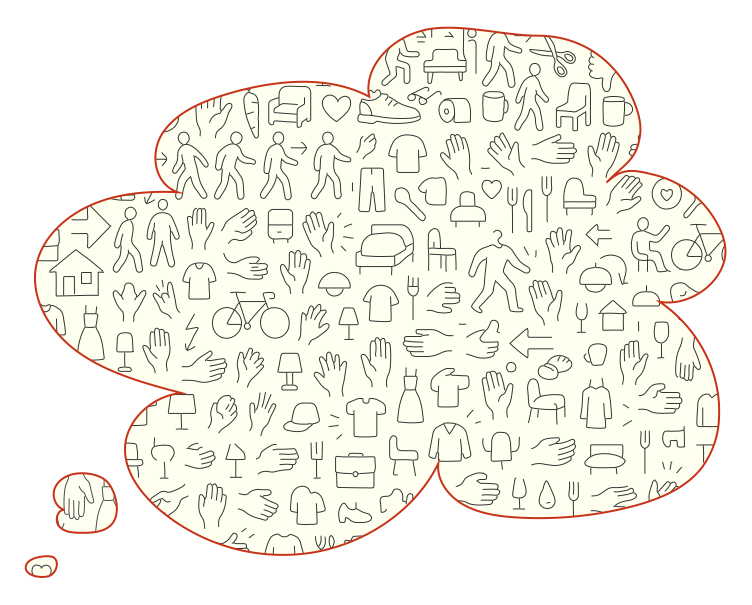

MediaFranca
A Practice-Oriented Investigation into a Generative Pictographic System for Cognitive Accessibility
Supervisors
Dr. Marcos Steagall
Dr. Ivana Nakarada-Kordic
Advisor
Dr. Welby Ings
My family
Travesía 2018
Corredor Litoral
First Year Design Studio+
Third year Light and Color Design Studio
Initial round of
Interdisciplinary Inclusive Research
2017
Research Centre for
Accessibility and Inclusion
Pontifical Catholic University of Valparaíso
The PICTOS proyect
Visual and Procedural Supports for
Cognitive Accessibility of Public Services
How can a generative pictographic system be designed to support
communication for people with complex communication needs?

Text as Image
PictoNet Generative Pipeline
From text input to adaptive pictogram output


65 semantic primes
Substantives
- I
- YOU
- SOMEONE / PERSON
- SOMETHING / THING
- BODY
- PEOPLE
Determiners & Quantifiers
- THIS
- THE SAME
- OTHER / ELSE
- ONE
- TWO
- MANY / MUCH
- SOME / A FEW
- ALL
- THERE IS / EXISTS
- HAVE (PARTS)
Mental Predicates
- THINK
- KNOW
- WANT
- FEEL
- SEE
- HEAR
Time & Place
- WHEN / TIME
- NOW
- BEFORE
- AFTER
- A LONG TIME
- A SHORT TIME
- WHERE / PLACE
- HERE
- ABOVE
- BELOW
- FAR
- NEAR
- SIDE
- INSIDE
Logical Concepts
- NOT / NO
- MAYBE
- CAN
- BECAUSE
- IF
Evaluators & Descriptors
- GOOD
- BAD
- BIG
- SMALL
- VERY
- LIKE / AS
Wierzbicka, A. (1996, revised 2017). Natural Semantic Metalanguage
Revised set of 65 semantic primes. London: Oxford University Press.